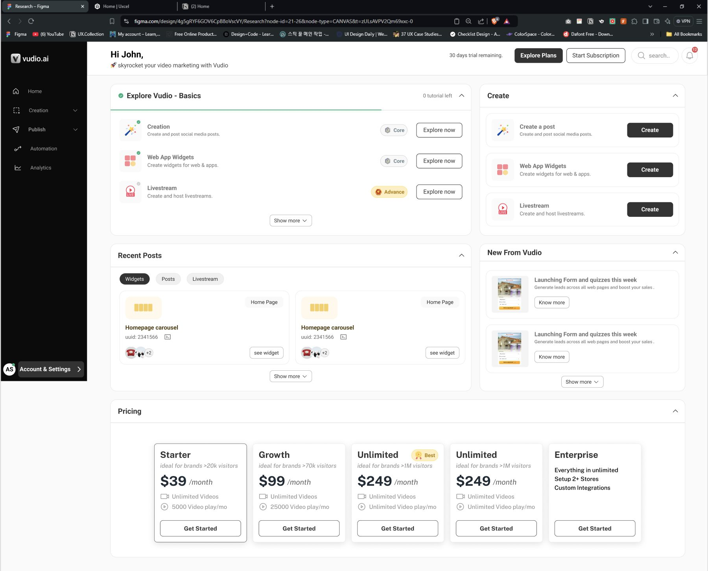
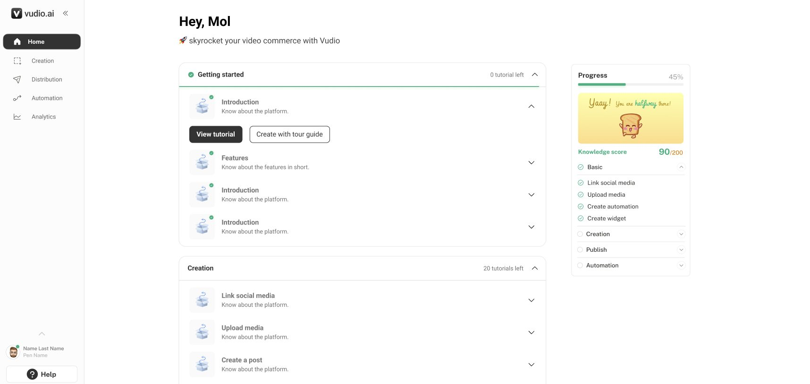
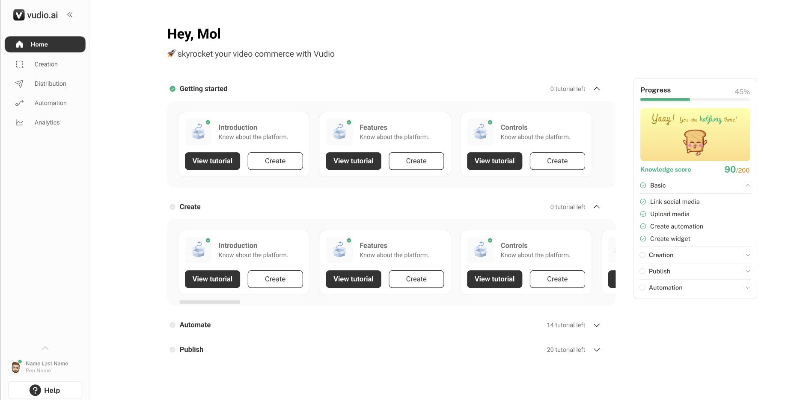
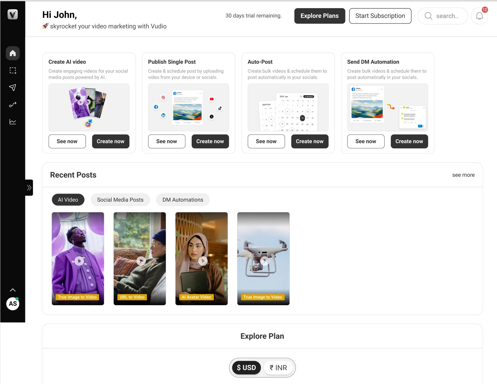
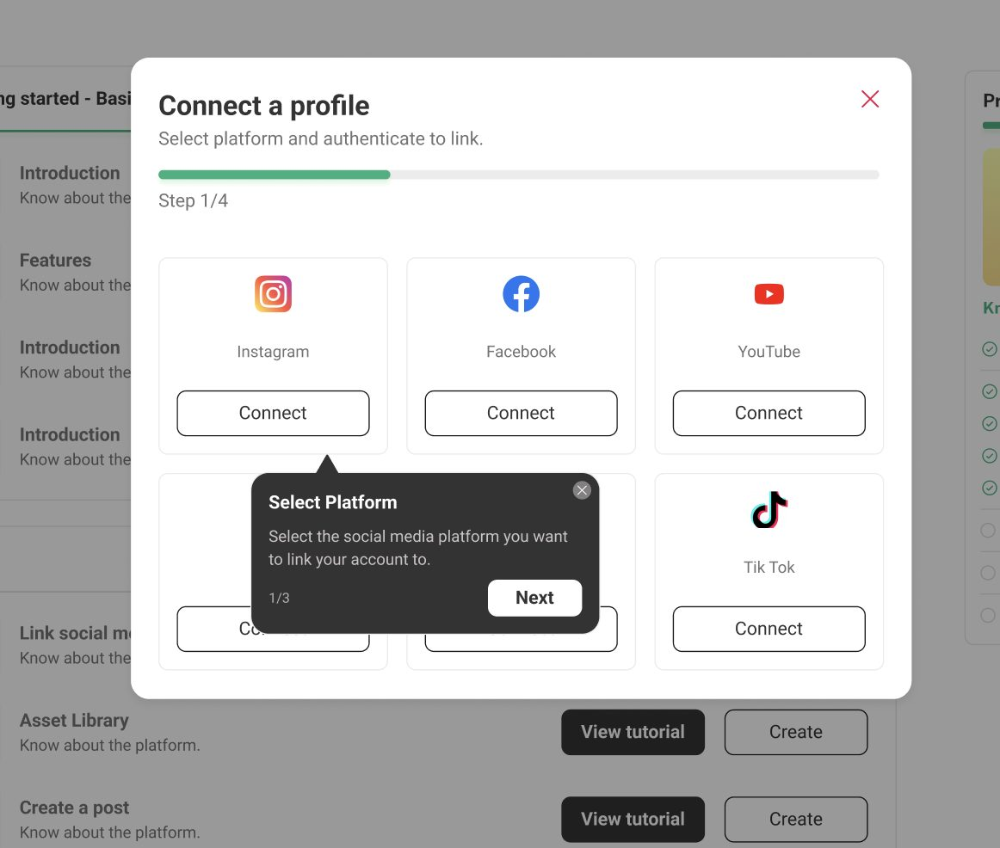
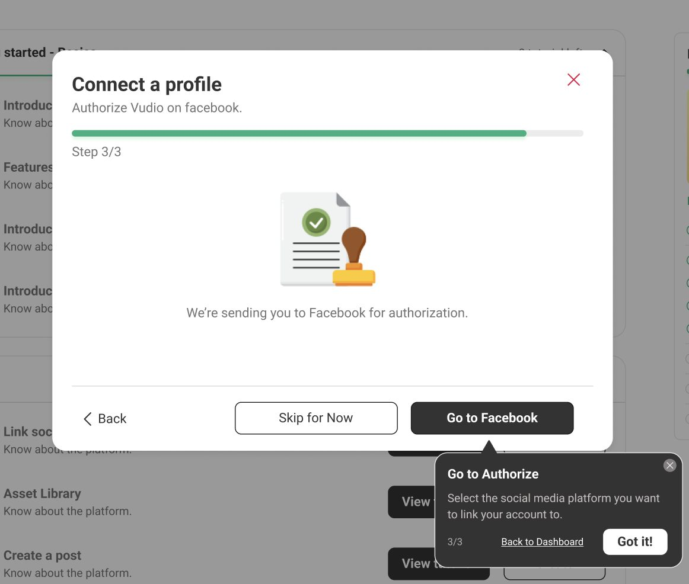

Redesigning how new clients learn Vudio, so they could set it up and make their first ad on their own.
ProductVudio, AI marketing assetsTypeB2B SaaS web appFocusOnboarding and activationScopeFlows and UI
Part 1
Problem
Why onboarding needed work, and what we set out to do.
About Vudio
What Vudio is
Vudio helps online stores sell on social media. You give it a product link, or a photo and a short description, and it makes the ads for you. It can post them to your accounts and reply to people who comment, sending them the product link in a DM.
1
Denim blazer$129 · mirastudio.com
✦ AI
ReelPostCarousel
Create with AIGive your product link, or a photo and a description. Nothing else. Vudio makes the marketing assets.
2
November
Tue · 10:30
Schedule and postPick the accounts and a time. Vudio posts to every connected platform.
3
@sara · commentPrice? 😍Which size do you need?SMLXLHere's your blazer in M 👉
DM automationSomeone comments on the post. Vudio replies in their DMs, asks for size or color, then sends the exact link.
4
Orders today$516
Denim blazer · Mvia Instagram DMPaid
Denim blazer · Svia FacebookPaid
Denim blazer · Lvia Instagram DMPaid
Denim blazer · Mvia TikTokPaid
Collect ordersBuyers check out from the DM, and every order lands in the store's portal.
The problem
Onboarding had to teach the product
Vudio was new, and more features were coming. Setting up an account wasn't enough; people also had to learn how to use it. Manuals didn't help much. Some clients asked for the same walkthrough three or four times, and Customer Success spent more time on onboarding every week.
A new kind of product
Most clients had never used a tool like Vudio, so they had no habits to lean on.
More features on the way
Whatever onboarding taught had to keep working as new features shipped.
Manuals didn't stick
People read the docs, then still asked for a call to see it done.
Support time kept growing
Every new client added onboarding and re-training hours for Customer Success.
Goals
What we wanted
We wanted new clients to learn Vudio by using it, and to need Customer Success less while doing it.
Activation, defined
A client is activated once they have seen what Vudio does, connected a social account and created their first marketing asset. Every screen in the first visit pushes toward those three things.
Learn by doing
Each step ends with something real: a connected account, a finished reel. People remember what they built, and it gives them a reason to come back.
Finish what you started
Steps are numbered, timed and tracked. An unfinished set stays in view, and people tend to close open loops (the Zeigarnik effect).
Help at the moment of doubt
Short guides sit next to the control they explain, so the answer arrives before the question becomes a support ticket.
Part 2
Solution
The final screens, one by one, and why they look the way they do.
Screen 1 · First visit
The first home screen
New clients see five steps in order instead of a page of tools. The first is a short tour. The rest use the same cards they'll see on the home screen later, so nothing looks new twice.
The whole pageOne primary action on the page. Plans and trial stay in the top bar, out of the way.Tour first"Start with a guide" is the main button because doing beats reading. "See how it works" opens the docs for people who prefer that. The 0/5 ring keeps the set in view.Then the tools, in orderEach card shows its time (2 to 4 minutes), which lowers the cost of starting. Names describe outcomes, like "Turn comments into sales", not features.
Screen 2 · Step 1
What Vudio does
Before asking for anything, we show what Vudio does in plain words: add a product, get ads, post them, reply to buyers, get orders. Three slides, two steps each.
MakeThe promise sits above every slide: one product in, orders out.PublishThe real product, the denim blazer, carries through every stage, so the story stays concrete.SellThe tour ends by handing off to the next step. "Skip intro" stays available for people who already know.
Screen 3 · Step 2
Connecting social accounts
Nothing in Vudio works until an account is connected, so this step needed to be easy to finish. Every screen in it follows the same layout, and the guide sits beside the dialog so it never covers the options.
Where do you sell?Each platform is tinted in its own color. Instagram and Facebook are marked "Needed for DMs" because DM automation depends on them.Who's posting?Business or personal is asked before sign-in, with what each one unlocks. It answers the "why can't I set up DMs?" question before it is asked.Allow Vudio on InstagramPermissions are listed in plain words, including what Vudio will never do. Then one button. No surprises on Meta's own screen.Instagram is connectedPeople choose which found accounts Vudio may use, see the linked Facebook Page, and get the next step with its time.
Screen 4 · Step 3
Making the first asset
This is the step where a client becomes active, so it opens full screen with nothing else around it. There are four short steps, each with a tip, and the finished assets show up on the home screen.
Start with your productPaste a link and the product is fetched automatically. Below an "or", upload images and write a description. One way at a time, so nothing conflicts.Where will it go?Platforms on the left, formats on the right as small mockups in their real shapes. Only formats the platform supports appear. A live count shows what will be made.Pick a sizeThe best ratio is preselected for each format, with a preview. Most people press Create without changing anything, and that is the point.Creating your assetsAssets appear as they finish and nothing blocks the user. A toast confirms the step and names the next one.
Guided help
How the guide works
The guide does the job the onboarding call used to do. It only shows up on steps where people tend to get stuck, uses plain words, and can be closed at any time.
Explains the why"Selling something? Pick business." The guide gives the reason, not just the instruction.Sets expectations"Every format you pick becomes its own asset." It prevents surprise at the next step.Lowers the stakes"Keep our picks if unsure." Permission to move on is often the most useful help.
Beside, never on top
The guide points at the control it explains and never covers the options.
Two sentences at most
A title that says what to do or why, then one line of context.
Always optional
A step count, Back and Next, and a close button. "See how it works" stays available for people who prefer reading.
Fewer tickets by design
Each guide answers a question Customer Success used to hear on calls, like "why business?" or "what can Vudio post?".
Screen 5 · After activation
Home after the first asset
Once a client has made something, the home screen changes. Setup shrinks to a small button, and the space goes to what to try next and what they've already made.
The whole pageNext steps first, creations below, plans last.Next upScheduling, comment-to-DM and the size-or-color question are offered in order, each with a guide. The first one already holds their own asset.Your creationsSplit by where they go, Social media or Website, with filters by format and a status on every asset.
Part 3
Execution
What changed afterwards, what I learned, and the earlier versions.
Impact
What changed
Vudio is B2B, so most of what we learned came from Customer Success. Onboarding got easier for them, tickets about onboarding and re-training went down a lot, and clients stopped asking for repeat sessions.
0clients needing a second onboarding. Before, some needed it three or four times.
Down significantlysupport tickets about onboarding and re-training.
Easierfor Customer Success to onboard every new client, with time back for accounts that needed them.
Iterations
Iterations
Each screen went through a few rounds. Here they are in order, from the earlier versions to the final one.
Home
From the original dashboard to a first-visit path, then to the activated home.

Earlier iterationTutorials next to a create list, with progress per tutorial.

Earlier iterationA clean list with a progress panel on the right.

Earlier iteration (shipped)Tutorial cards per area with View tutorial and Create. Chosen for returning users.

Earlier iterationTool cards with See now and Create now, recent posts and plans on one page.Redesign · AFive steps as one path, one open at a time.Redesign · BAll steps as cards, the current one opened below.Redesign · CSteps on the left, the selected step on the right.Redesign · DThe current step as a hero, tools below to explore freely.FinalTour first, then the tools in order, using the same cards as the activated home.Activated · v1With a full setup panel on the right.Activated · finalSetup folded into a pill for more room.
What Vudio does
From one dense row to a carousel.
v1All six stages at once. Too much to read.FinalTwo stages per slide, the next one peeking in.
Connect socials
From plain cards to a guided, explained flow.

Earlier iterationPick a platform, with a guide tooltip and a step bar.

Earlier iterationHand-off to Facebook to authorize, with the guide at the last step.Redesign · v1Multi-select platforms. The hierarchy was weak and the logic unclear.Redesign · v1 stepsAccount type, accounts, success, as separate dialogs.FinalOne dialog layout, brand-tinted cards, guide beside the dialog.
Create first asset
From a template picker to a full-screen, four-step flow.
v1Product and templates on one screen, with a spotlight on the templates.FinalLink first, or upload, then platforms, size and generation.
Learnings
What I learned
A few things I'd carry into the next onboarding project.
Teach inside the task
A guide next to the button beat any manual. People learn best at the moment they are about to act.
Name outcomes, not features
"Turn comments into sales" says why a step matters; "DM automation" only says what it is. Plain outcomes lower the cost of starting.
Answer the hard question early
Explaining business vs personal accounts before sign-in removed the most common confusion later on.
Build for features not shipped yet
Steps and guides are a pattern, not a one-off. A new feature adds one card and one guide, not a new onboarding.
Support tickets are research
The questions Customer Success heard on calls became the copy of the guides.